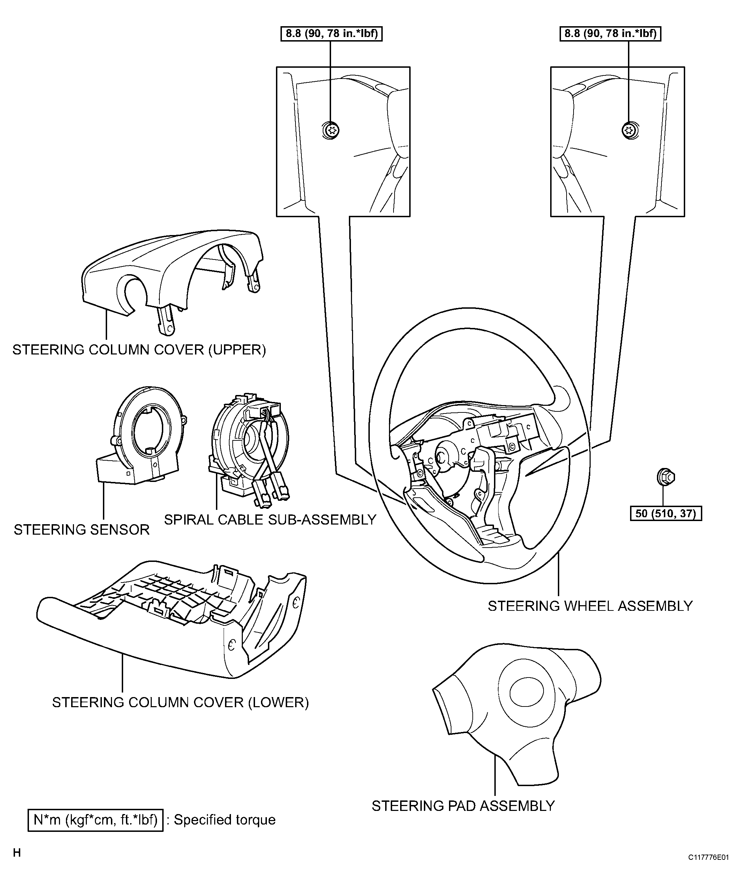

Home
>>
Scion
>>
2006
>>
xB Standard
>>
Repair and Diagnosis (Single Page)
>>
Brakes
>>
Traction Control
>>
Brakes - Abs
>>
STEERING ANGLE SENSOR (w/VSC)
>>
Components
STEERING ANGLE SENSOR (w/VSC): Components
Fig 1: Identifying Steering Angle Sensor Components

Courtesy of © TOYOTA, LICENSE AGREEMENT TMS1002